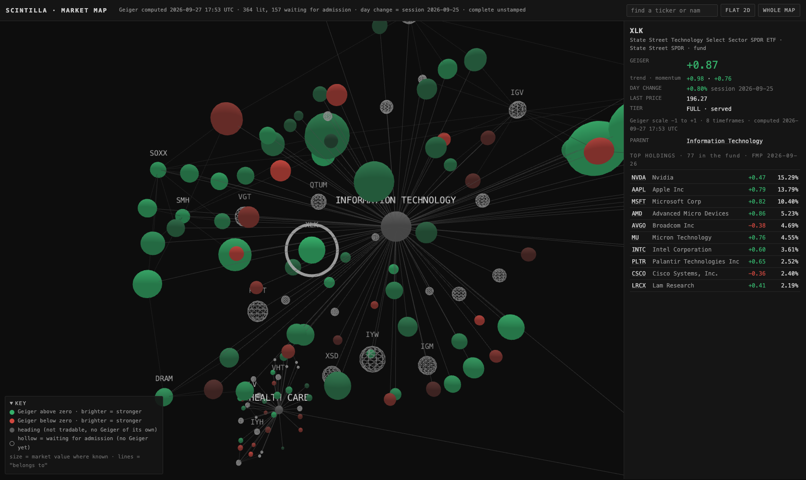
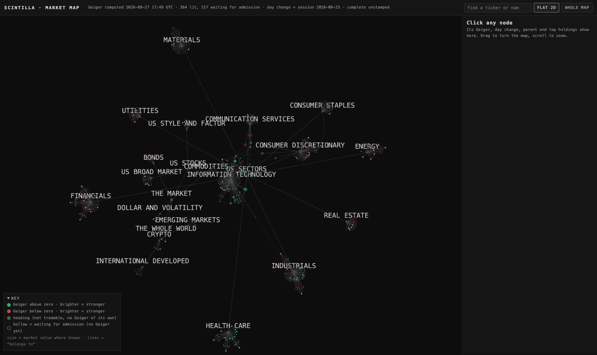
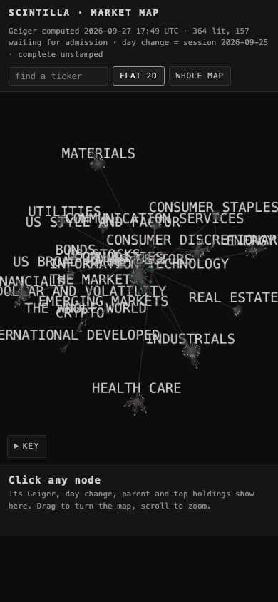

The market as one 3D map: real Geigers where we have them, honest placeholders where we don't
Open the map. It is one picture of the market, from the top down. The market splits into regions and asset classes. US stocks split into the 11 sectors. Each sector holds its SPDR, iShares, Vanguard and Invesco equal-weight funds side by side, then its industry and theme funds, then the companies. Drag to turn it, scroll to zoom, click any ball for its card, and type a ticker in the search box. FLAT 2D lays it flat for reading.
What each colour means
| green | The line's Geiger is above zero, meaning its trend and momentum lean up. Brighter green = stronger. A ball at +0.9 glows. A ball at +0.05 is barely tinted. |
| red | The Geiger is below zero. Brighter red = stronger down. |
| solid grey | A heading, such as "Information Technology" or "Bonds". It is not something you can buy, so it has no Geiger of its own. The funds under it each carry their own. |
| hollow (wire) ball | Waiting for admission. We know it belongs on the map, but the Hub does not serve it yet, so it has no Geiger. It shows no colour and no number, and its card says what admission would make it. |
| size | Companies are sized by market value (NVIDIA is the biggest ball). Funds have one fixed size, because we hold no fund-size figure yet. |
| lines | Each line means "belongs to". A company also links to every industry fund that holds it among its top 10: NVIDIA hangs off Information Technology, SMH, SOXX and AGIX. |
In the card, a day change is green when the line rose on the day and red when it fell, the house rule. Today is Sunday, so "day change" is Friday's session (25 Sep), and the card says so.
What is real
- The Geiger colour and number come live from the chart API
/geiger, the same reading the Hub shows. It is computed from 8 timeframes on a −1 to +1 scale. The top of the page prints when it was computed. On this build all 364 served lines came back, and none was missing. - Day change and last price come live from the chart API
/quotes, using the same rule as the Hub's CHG column. - Which lines are served comes from the chart API
/universe: 364 lines, fingerprintab8f7965…. The test fails if that list moves and the map was not rebuilt. - Top holdings with weights come from the FMP holdings file of 26 Sep, covering 51 funds. The card shows the fund's top 10, cash lines removed, dated "FMP 2026-09-26".
- Sector and industry of each company, and its market value come from the 24 Sep tree work (
data/standard-tree-20260924.json, GICS categories).
What is placeholder
- 157 hollow balls:
- 48 funds on the 27 Sep admission list for a Geiger only. That is all 48 on the list: the 11 iShares and 11 Vanguard sectors, VT, ITOT, IWV, VXUS, AGG, DBC, UUP, VXX, IBIT, the factor funds and the rest.
- 23 funds and 33 companies from the list's full-admission half.
- 20 funds that are proposed but not on the list yet: the 11 Invesco equal-weight sector funds (RSPT, RSPF…) and the 9 iShares industry funds (IGM, IAT, IAK…).
- 33 companies that are big holdings of our sector and industry funds but have never been admitted, such as FTNT, PYPL and DHI.
- The 33 candidate companies (AAOI, KTOS, LUNR…) are placed by their admission cohort. For example, "AI hardware" goes under Information Technology, and the uranium names go under Energy. That placement is approximate until they are admitted with a real sector.
- Funds have no size. We hold no assets-under-management figure, so every fund ball is the same size.
How each fund's own Geiger and its children's blend will work (later, back end only)
As you asked, every tradable parent (XLK, SMH, VT…) gets its own Geiger once admitted, read from its own price like any other line. That is the colour the map shows. Separately, the back end will compute a "children's blend" for each fund. It is never shown on the Hub. The recipe:
- Take the fund's holdings file, dated. It is 26 Sep today.
- Sort the holdings by weight. Take them from the top until they add up to 80% of the fund's weight.
- Rescale those weights so they add to 100%. Multiply each company's Geiger by its weight, and add them up. That sum is the blend.
- Store alongside it how much of that 80% actually had a Geiger (the "coverage"), and the holdings date.
- Recompute whenever the fund rebalances, meaning when a new holdings file arrives with a later date.
What that looks like today, from the 26 Sep holdings against the 364 served lines. This counts only; no blend was computed:
| fund | holdings | names to reach 80% | of those, served today | weight with a Geiger |
|---|---|---|---|---|
| XLK | 77 | 21 | 21 | 80.7% of 80.7% |
| XLF | 80 | 27 | 27 | 80.1% of 80.1% |
| XLE | 24 | 11 | 11 | 80.8% of 80.8% |
| SMH | 27 | 13 | 12 | 76% of 80.5% |
| SOXX | 33 | 16 | 13 | 72.1% of 81.3% |
| IGV | 109 | 20 | 15 | 71.8% of 80.7% |
| QQQ | 106 | 35 | 35 | 80.6% of 80.6% |
| SPY | 505 | 127 | 124 | 79.5% of 80% |
| VTI | 3,516 | 229 | 202 | 77.6% of 80% |
| RSP | 511 | 393 | 197 | 40% of 80% |
| IBB | 246 | 42 | 4 | 28.9% of 80.2% |
| XRT | 76 | 56 | 8 | 11.8% of 81% |
| KRE | 169 | 89 | 0 | 0% of 80.1% |
| IWM | 1,988 | 737 | 12 | 1.9% of 80% |
| VXUS | 8,832 | 2,704 | 3 | 0.2% of 80% |
| DRAM | 26 | 9 (all listed) | 4 | 13.3% of 35.7% |
What this says in plain words: the SPDR sectors, QQQ and SPY are almost fully covered today, so their blends could be computed now. Small caps (IWM), regional banks (KRE), retail (XRT), biotech (IBB) and everything outside the US (VXUS) mostly hold companies we don't serve. Their blend would be thin until more names are admitted. DRAM's file lists only 9 of its 26 holdings (15% is cash), so its file needs refreshing before a blend means anything.
The "scintillate" hook (named, not built)
The page has a function called scintillate(node, multiple) and a setting SCINTILLATE_MULTIPLE = 3. The idea: a ball flashes when today's move is 3 times its usual day. The function exists and says where it plugs in, but it does nothing and nothing calls it, so there is no animation yet. A test checks that it stays that way until you ask.
Proof: what the screenshots actually show
These are real headless-browser screenshots, taken with no window on your screen. The 3D canvas renders headless using software graphics (SwiftShader), so the flat 2D fallback was not needed. The chart API only answers the scintillahub.ai address, so for these local shots I relaxed the cross-origin check in the throwaway headless browser only. The page itself is unchanged.







CPU, measured
For each case: 60 seconds untouched after the map settles, then 60 seconds of nonstop dragging. The figure is CPU-seconds used per minute, counted over every Chrome process. For scale, 60 would be one core fully busy.
| graphics | idle · whole Chrome | idle · the page itself | rotating · whole Chrome | rotating · the page itself |
|---|---|---|---|---|
| Mac GPU (Apple M5 Max, headless) | 1.2 | 0.01 | 23.3 | 14.0 |
| software graphics (SwiftShader) | 2.3 | 0.01 | 637.6 | 3.3 |
Idle is effectively zero. Once the layout settles, the simulation stops and the page stops drawing. It wakes when you touch it and sleeps again 1.5 seconds after you let go; the test run confirmed it paused again after the drag. While you turn it on a real GPU it costs about a third of one core. The software-graphics row only shows that drawing on the CPU is expensive. No real screen uses it.
What could be wrong
- The Geiger label today is "complete unstamped". Every cell was computed from current bars, but the final-session proof stamp is missing, as the chart API itself says.
- The holdings are one day old (26 Sep) and change when funds rebalance. The VXUS and VT files stop at 4,000 lines.
- Fund issuers and some fund names are hand-typed in
scripts/build-market-map.mjs. A typo there would show on a card. - The 33 candidate companies sit under a sector chosen from their cohort, which is approximate.
- "Link to the Hub company view" became a link to the Station chart, the same chart the Hub's company view shows inside it. The Hub has no address that opens one company directly (see decision 1).
- The map layout is different every time you load it, because the force layout starts fresh. Clusters stay together, but where they sit moves.
What I did not do
- No admission. Nothing was added to the served set, and the hollow balls stay hollow until the admission run lands.
- No blend computed or stored. The recipe and the coverage counts above are all there is.
- No scintillate animation.
- No push, no deploy, no database write, no paid model call.
- I did not open the Perplexity reference page. The brief gave its structure and said its readings are random, so I built from the holdings file and the 24 Sep tree instead.
- Not linked from the Workshop or prototypes library yet. The coordinator adds the card when merging.
Files
deliverables/20260927/market-map/index.html: the working map.deliverables/20260927/market-map/nodes.json: the one node list, the source of truth. It holds structure only, no readings.scripts/build-market-map.mjs: rebuilds the node list from /universe, the tree, the holdings and the admission list.tests/market-map.test.mjs: checks that every parent exists, that there are no cycles, that every served ticker matches /universe, that no reading is stored, and the house colours.deliverables/20260927/market-map/proof.mjs: the headless screenshot and CPU script.